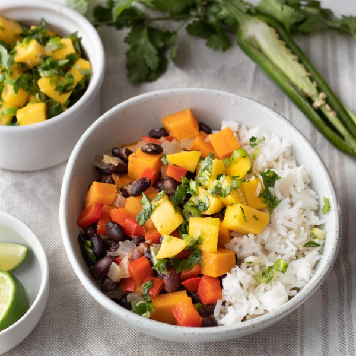

Caribbean Black Bean Stew with Mango Salsa & Rice

Total Time
35 min
Nutrition (per serving)
702.8 kcalCalories
24.2 gProtein
133.7 gCarbs
10.6 gFat
Full nutrition table
| Calories | 702.8 kcal |
| Total fat | 10.6 g |
| Saturated fat | 1.8 g |
| Trans fat | 0.1 g |
| Cholesterol | 0 mg |
| Sodium | 656.7 mg |
| Carbohydrates | 133.7 g |
| Fiber | 23.6 g |
| Sugars | 33.5 g |
| Protein | 24.2 g |
| Potassium | 1820.6 mg |
| Calcium | 216 mg |
| Iron | 7.8 mg |
| Vitamin A | 16354.6 IU |
| Vitamin C | 165 mg |
| Vitamin D | 0 IU |
Cookware
Ingredients
- 1 cupbasmati rice
- 2 (15 oz) cansblack beans
- 32 fl ozchicken or vegetable broth
- 1 small bunchcilantro
- 4 clovesgarlic
- 1 small bunchgreen onions (scallions)
- 1jalapeño pepper
- 2limes
- 2mangoes
- 2red bell peppers
- 1 lbsweet potato
- 1 mediumyellow onion
- cayenne pepper
- cinnamon, ground
- cumin, ground
- extra virgin olive oil
- salt
Steps
- Using a strainer or colander, rinse the rice under cold, running water, then drain and transfer to a medium saucepan. Add water and salt, then bring the mixture to a boil over high heat.1 cup basmati rice
2 cup water
½ tsp salt - Once the liquid comes to a boil, stir the mixture, cover the saucepan, and reduce the heat to low. Cook the rice until the liquid is fully absorbed, 15-18 minutes. Once done, remove the rice from the heat and let it stand, still covered, for 5 minutes.
- Wash and dry the fresh produce.2 red bell peppers
1 lb sweet potato
2 mangoes
1 small bunch green onions (scallions)
1 small bunch cilantro
1 jalapeño pepper
2 limes - Drain and rinse beans in a colander; set aside to drain further.2 (15 oz) cans black beans
- Peel and small dice onion. Peel and mince garlic.1 medium yellow onion
4 cloves garlic - Preheat a large pot over medium-high heat.
- Seed and small dice bell peppers.
- Once the pot is hot, add oil and swirl to coat the bottom. Add onion, garlic, and bell pepper; cook, stirring occasionally, until veggies begin to soften, about 4 minutes.2 tbsp extra virgin olive oil
- Meanwhile, peel and chop sweet potatoes into ½-inch pieces. Add to the pot with the veggies along with the beans, broth, and spices. Stir and bring to a boil over high heat. Reduce heat to a simmer and cook, stirring occasionally, until potatoes are fork-tender, about 10 minutes.32 fl oz (4 cups) chicken or vegetable broth
1 tsp salt
½ tsp cinnamon
¼ tsp cayenne pepper
¼ tsp cumin - Peel mangoes and slice the flesh away from the pit, starting with the flat sides; small dice and place in a medium bowl.
- Trim and mince green onions; add to the bowl with the mango.
- Shave the cilantro leaves off the stems; discard the stems and mince the leaves. Add to the bowl.
- Quarter jalapeño pepper lengthwise; seed and remove ribs of the jalapeño with a spoon. Finely dice and add to the bowl. (Be careful, with jalapeños, do not touch your eyes and ensure you wash your hands after handling or wear gloves while preparing.)
- Juice limes into the bowl and stir to combine the salsa.
- To serve, divide rice, stew, and mango salsa between bowls. Enjoy!